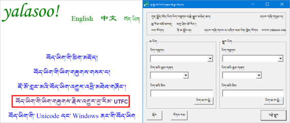

ཆས་འདི་ནི་རྒྱལ་མི་གཅིག་པའི་བོད་ཡིག་ཆ་རྣམས་ཚུལ་བརྗེ་རེད Y འདིས་བོད་ཡིག་ནས་ནས་Wylie ལེ་དང་ལེ་ནས་བོད་ཡིག་བསྒྱུར་ཆས་འདི་དབྱིན་བོད་ཡིག རྒྱ་ཡིག་རིགས་རིགས་བདེ་བ་དེ་བཀོལ་Kyi stangs go_rim la gzigs _ bkol
zhe ge shi de zang_wen zi_ti bu_tong xiang_hu zhuan_huan de ruan_jian. Ke_yi ruan_jian zai ci yong Wiley zang_wen he zhi_jian xiang_hu zhuan_huan, ju_you cang han_ying san_zhong yu_yan, fang_bian shi_yong请看 具体 的。
🔊 གཤམ་བཀོད་ཚོད་དྲི་བ་ཁག་ཤེས་བླངས་ཆོག པར་ལོངས་དང་བ་རྣམས་ལ་ལན་您能回答以下问题，那么 您
ཚོད་ལྟའི་དྲི་ལན་དག་ཤེས་དགོས་པའི་ངེས་པ་མེད་པས། ཐད་ཀར་“མི་ཤེས་”འདེམ་ཆོག
不一定要知道测试的答案，可以选“不知道”
༡༽ ཡིག་གཟུགས་བསྒྱུར་ཆས་འཚོལ་སྟངས། 字体转换器的查找方法
འཚོལ་བའི་རིམ་པ། 查找程序
🢣 百度 འཚོལ་བཤེར་དྲ་ཚིགས་སྒོ་ཕྱེས་ཏེ་yalasoo.com ཕྲིས། 用百度搜索yalasoo.com
🢣 བཙལ་འབྲས་དང་བོའི་སྟེང་སྣུན། 点击第一个搜素结果
🢣 བོད་ཡིག་ཟེར་བར་སྣུན། 点击藏文
🢣 ཡིག་གཟུགས་བརྗེ་བསྒྱུར་གྱི་བྱ་རིམ། UTFC ལ་སྣུན།点击字体变换程序UTFC
🢣 མདའ་རྟགས་གཏད་ས་དེར་སྣུན། 点击箭头所指的点
༢༽ ཕབ་ལེན་བྱས་རྗེས་ཟྭ་ཕྱེ་བའི་རིམ་པ། 下载后解锁的程序
ཟྭ་ཕྱེ་སྟངས་ཀྱི་རིམ་པ་ནི། 解锁顺序
🢣 ལ་གཉིས་རྡེབ་བྱོས། 双击
🢣 མཉེན་ཆས་ཀྱི་ཟྭ་ཕྱེས། 打开软件锁
🢣 UTFC ལ་གཉིས་རྡེབ་བྱོས།双击UTFC
🢣 UTFC བོད་ཡིག་ཟེར་བར་གཉིས་རྡེབ་བྱོས།双击UTFC藏文
༣༽ མཉེན་ཆས་སྒྲིག་འཇུག་ཀྱི་རིམ་པ། 安装软件的程序
མཉེན་ཆས་སྒྲིག་འཇུག་གི་རིམ་པ་ནི། 安装软件的程序是：
🢣 setup.exe ལ་གཉིས་རྡེབ་བྱོས། 双击setup.exe
🢣 finish ཟེར་བར་སྣུན། 点击finish
🢣 Close ཟེར་བར་སྣུན། 点击close
🢣 འཆར་ངོས་ཀྱི་YTFC ལ་སྣུན་དང་སྒོ་ཕྱེ་ཡོང་། 点击屏幕上的YTFC并打开

དང་བོ། ངེས་དགོས་པའི་གནད་དོན་འགའ།需要指出的几个问题
🔊 མཉེན་ཆས་འདིའི་ནང་ཡོད་པའི་ཡིག་གཟུགས་མ་འདྲ་བ་རྣམས་ཕར་ཚུར་བསྒྱུར་དུས་ངེས་པར་ཤེས་དགོས་པ་འགའ། 本软件中有几个不同字体在来回转换时必须知道的是：
🢣 བསྒྱུར་བྱའི་ཡིག་ཆ་དེའི་ཡིག་གཟུགས་གང་ཡིན་ཤེས་དགོས། 应当知道所转换的字体的属性
🢣 ཡིག་གཟུགས་དེ་རང་གི་གློག་ཀླད་ནང་ཕབ་ལེན་བྱ་དགོས། 要把字体下载到电脑里
🢣 ཐོག་མར་ཡིག་ཆ་དེ་TRF ལ་བསྒྱུར་དགོས། 首先把文件格式转为TRF
🢣 MS word ནང་ནས་RTF ལ་བསྒྱུར་ཐུབ། 可以在Ms Word文档里转换
དཔེའི་ལམ་ནས་ངོ་སྤྲོད་ཅིག་བྱ། ང་ལ་ཡིག་གཟུགས་པཎྜིཏ་ཡིན་པའི་ཡིག་ཆ་ཞིག་ཡོད། དེ་ཕར་སམ་བྷོཊ་ལ་བསྒྱུར་དགོས། 举个例子，比如我有一个班智达字体的资料，要把它变成桑布扎字体。
ཀ༽ ངས་དང་བོ་སམ་བྷོཊའི་ཡིག་གཟུགས་ཕབ་ལེན་མ་བྱས་པར་དེ་ངོ་བཤུ་བྱས་ཏེ་MS word ནང་བཞག་པས་འདི་ལྟར་གྱུར་སོང་། 甲：像以下显示的一样，因我没把先桑布扎字体安装到电脑里。

ཁ༽ དེ་ནས་སམ་བྷོཊའི་ཡིག་གཟུགས་ཕབ་ལེན་བྱས་རྗེས་གཞི་ནས་ཡིག་འབྲུ་འཆར་སོང་། 乙：然后我把桑布扎字体下载以后就显示了完整的资料

ག༽ དེ་ནས་ཡིག་ཆའི་རྣམ་སྒྲིག་(格式) RTF ལ་བསྒྱུར་ཡོད། བསྒྱུར་སྟངས།

༥༽མཉེན་ཆས་ནང་དངོས་སུ་བསྒྱུར་ཚུལ།
ཡིག་ཆ་དེ་ཡིག་གཟུགས་བསྒྱུར་ཆས་བརྒྱུད་ནས་unicode ལ་བསྒྱུར་བའི་གོ་རིམ་ལ་གཟིགས། དཔེ་འདིའི་ལམ་ནས་གཞན་ལ་དེ་བཞིན་བྱེད་ཤེས་པར་བྱའོ།།

༦༽ Wylie བོད་ཡིག་ཡིག་གཟུགས་ལ་བསྒྱུར་སྟངས།
Wylie ཝེ་ལེ་བོད་ཡིག་ཡིག་གཟུགས་ལ་བསྒྱུར་ན་དེ་དང་བོ་ཡིག་རྐྱང་(.txt)ལ་བསྒྱུར་རྗེས། བོད་ཡིག་ཡིག་གཟུགས་ལ་བསྒྱུར་དགོས། བསྒྱུར་སྟངས་གོང་དང་མཚུངས།
ཀ༽Wylie པཎྜིཏའི་ཡིག་གཟུགས་ལ་བསྒྱུར་བའི་དཔེ་མཚོན།
ཁ༽Wylie པཎྜིཏའི་ཡིག་གཟུགས་ལ་མ་བསྒྱུར་བའི་སྔོན་གྱི་ཡིག་ཆ།

ག༽ Wylie བོད་ཡིག་ཡིག་གཟུགས་པཎྜིཏ་ལ་བསྒྱུར་ཟིན་པའི་ཡིག་ཆ།